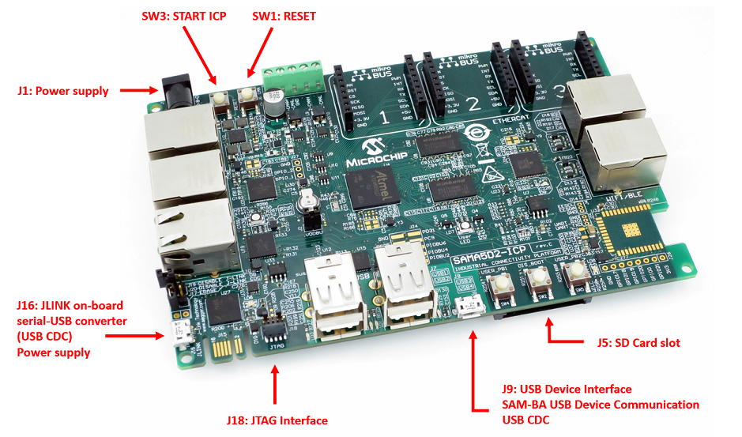

SAMA5D2-ICP Board
SoC Features
The SAMA5D2 series is a high-performance, ultra-low-power ARM Cortex-A5 processor based MPU. The Cortex A5 processor runs up to 500MHz and features the ARM NEON SIMD engine a 128kB L2 cache and a floating point unit. It supports multiple memories, including latest-generation technologies such as DDR3, LPDDR3, and QSPI Flash. It integrates powerful peripherals for connectivity (EMAC, USB, dual CAN, up to 10 UARTs, etc.) and user interface applications (TFT LCD controller, embedded capacitive touch controller, class D amplifier, audio PLL, CMOS sensor interface, etc.). The devices offer advanced security functions to protect customer code and secure external data transfers. These include ARM TrustZone, tamper detection, secure data storage, hardware encryption engines including private keys, on-the-fly decryption of code stored in external DDR or QSPI memory and a secure boot loader.
Kit Information
Kit Overview
The SAMA5D2 Industrial Connectivity Platform (SAMA5D2-ICP) provides a versatile Total System Solutions platform that highlights Microchip’s MPU and connectivity ICs for industrial networking applications. The board features three mikroBUS click interface headers to support over 450 MikroElektronika Click boards and provisions to solder a Microchip ATWILC3000-MR110CA or a ATWILC3000-MR110UA WiFi/BT module The baseboard features a wide range of peripherals, as well as a user interface. Connectors and expansion headers allows for easy customization and quick access to leading edge embedded features such as MikroElektronica Click Boards™. The Kit is supported by mainline Linux distribution as well as bare metal software frameworks allowing you to easily get started with your development.|  |
Access the console
The usual serial communication parameters are115200 8-N-1 :
| Baud rate | 115200 |
| Data | 8 bits |
| Parity | None |
| Stop | 1 bit |
| Flow control | None |
Access the console on JLINK micro-A USB connector (J16)
The serial console can be accessed from the micro-A USB connector that gives access to the on-board serial-to-USB converter (marked as J10 JLINK). In fact, the ATSAM3U chip on the Evaluation Kit acts as a serial-to-USB converter and is loaded with a firmware that is able to talk USB-CDC protocol.- For Microsoft Windows users: Install the J-Link CDC USB driver
 . No need to install a driver on any regular Linux distribution.
. No need to install a driver on any regular Linux distribution.
- Connect the USB cable to the board (J16 JLINK)
- For Microsoft Windows users: identify the USB connection that is established
JLINK CDC UART Portshould appear in Device Manager. TheCOMxxnumber will be used to configure the terminal emulator.

- For Linux users: identify the USB connection by monitoring the last lines of
dmesgcommand. The/dev/ttyACMxnumber will be used to configure the terminal emulator:usb 1-1.2.2.4: new high-speed USB device number 33 using ehci-pci usb 1-1.2.2.4: config 1 interface 1 altsetting 0 bulk endpoint 0x83 has invalid maxpacket 64 usb 1-1.2.2.4: config 1 interface 1 altsetting 0 bulk endpoint 0x4 has invalid maxpacket 64 usb 1-1.2.2.4: New USB device found, idVendor=1366, idProduct=0105 usb 1-1.2.2.4: New USB device strings: Mfr=1, Product=2, SerialNumber=3 usb 1-1.2.2.4: Product: J-Link usb 1-1.2.2.4: Manufacturer: SEGGER usb 1-1.2.2.4: SerialNumber: 000483029109 cdc_acm 1-1.2.2.4:1.0: ttyACM0: USB ACM device
- For Microsoft Windows users: identify the USB connection that is established
- Now open your favorite terminal emulator with appropriate settings
Demo
Demo archives
| Media type | Board | Screen | Binary | Description |
|---|---|---|---|---|
| Yocto Project / Poky based demo | ||||
| SD Card image | SAMA5D2-ICP | - | linux4sam-poky-sama5d2_icp-headless-2020.10.img.bz2 md5: 7c5662fbeb7c8df566c629ac93f78fcb |
Linux4SAM Yocto Project / Poky based demo compiled from tag linux4sam-2020.10 Follow procedure: #Create_a_SD_card_with_the_demo |
| BuildRoot based demo | ||||
| SD Card image | SAMA5D2-ICP | - | linux4sam-buildroot-sama5d2_icp-headless-2020.10.img.bz2 md5: bef09a480894340ef6f2f6b708271a2e |
Linux4SAM BuildRoot based demo compiled from tag linux4sam-2020.10 Follow procedure: #Create_a_SD_card_with_the_demo |
| OpenWrt based demo | ||||
| SD Card image | SAMA5D2-ICP | - | linux4sam-openwrt-sama5d2_icp-headless-2020.10.img.gz md5: edeb343af1594b163c35eb521cd35d8f |
Linux4SAM OpenWrt based demo compiled from tag linux4sam-2020.10 Follow procedure: #Create_a_SD_card_with_the_demo |
Create a SD card with the demo
You need a 1 GB SD card (or more) and to download the image of the demo. The image is compressed to reduce the amount of data to download. This image contains:- a FAT32 partition with the AT91Bootstrap, U-Boot and the Linux Kernel (zImage and dtb).
- an EXT4 partition for the rootfs.
Multi-platform procedure
To write the compressed image on the SD card, you will have to download and install Etcher- Insert your SD card and launch
Etcher:

- Select the demo image. They are marked as "SD Card image" in the demo table above.
Note that you can select a compressed image (like the demos available here). The tool is able to uncompress files on the fly - Select the device corresponding to your SD card (Etcher proposes you the devices that are removable to avoid erasing your system disk)
- Click on the
Flash!button - On Linux, Etcher finally asks you to enter your root password because it needs access to the hardware (your SD card reader or USB to SD card converter)
- then the flashing process begins followed by a verification phase (optional)

- Once writing done, Etcher asks you if you want to burn another demo image:
- Your SD card is ready!
Build From source code
Setup ARM Cross Compiler
- Ubuntu:
In Ubuntu, you can install the ARM Cross Compiler by doing:sudo apt-get install gcc-arm-linux-gnueabi export CROSS_COMPILE=arm-linux-gnueabi-
- Others:
For others, you can download the Linaro cross compiler and setup the environment by doing:wget -c https://releases.linaro.org/components/toolchain/binaries/7.3-2018.05/arm-linux-gnueabi/gcc-linaro-7.3.1-2018.05-x86_64_arm-linux-gnueabi.tar.xz tar xf gcc-linaro-7.3.1-2018.05-x86_64_arm-linux-gnueabi.tar.xz export CROSS_COMPILE=`pwd`/gcc-linaro-7.3.1-2018.05-x86_64_arm-linux-gnueabi/bin/arm-linux-gnueabi-
Build AT91Bootstrap from sources
This section describes how to get source code from the git repository, how to configure with the default configuration, how to customize AT91Bootstrap based on the default configuration and finally to build AT91Bootstrap to produce the binary. take the default configuration to download U-Boot from NandFlash for example.Get AT91Bootstrap Source Code
You can easily download AT91Bootstrap source code on the at91bootstrapTo get the source code, you should clone the repository by doing:
$ git clone git://github.com/linux4sam/at91bootstrap.git Cloning into 'at91bootstrap'... remote: Enumerating objects: 51, done. remote: Counting objects: 100% (51/51), done. remote: Compressing objects: 100% (32/32), done. remote: Total 10880 (delta 20), reused 39 (delta 19), pack-reused 10829 Receiving objects: 100% (10880/10880), 4.03 MiB | 395.00 KiB/s, done. Resolving deltas: 100% (8300/8300), done. $ cd at91bootstrap/
Configure AT91Bootstrap
Assuming you are at the AT91Bootstrap root directory, you will find aboard/sama5d2_icp folder which contains several default configuration files: sama5d2_icpdf_qspi_uboot_defconfig sama5d2_icpsd_uboot_defconfig
qspi means to read quad-SPI serial flash, sd means to read mmc card. You can configure AT91Bootstrap to load U-Boot binary from SD Card by doing:
$ make mrproper $ make sama5d2_icpsd_uboot_defconfigIf the configuring process is successful, the .config file can be found at AT91Bootstrap root directory.
Customize AT91Bootstrap
If the default configuration doesn't meet your need, after configuring with the default configuration, you can customize it by doing:$ make menuconfigNow, in the menuconfig dialog, you can easily add or remove some features to/from AT91Bootstrap as the same way as kernel configuration.
Move to
<Exit> with arrows and press this button hitting the Enter key to exit from this screen.
Build AT91Bootstrap
Then you can build the AT91Bootstrap binary by doing:$ makeIf the building process is successful, the final .bin image is binaries/at91bootstrap.bin.
Build U-Boot from sources
Getting U-Boot sources
Dedicated page on U-Boot wiki: http://www.denx.de/wiki/U-Boot/SourceCode- clone the Linux4sam GitHub U-Boot repository
$ git clone git://github.com/linux4sam/u-boot-at91.git Cloning into 'u-boot-at91'... remote: Enumerating objects: 106920, done. remote: Counting objects: 100% (106920/106920), done. remote: Compressing objects: 100% (24617/24617), done. remote: Total 566593 (delta 84756), reused 96342 (delta 81351), pack-reused 459673 Receiving objects: 100% (566593/566593), 131.67 MiB | 430.00 KiB/s, done. Resolving deltas: 100% (456142/456142), done. $ cd u-boot-at91
- The source code has been taken from the master branch which is pointing to the latest branch we use. If you want to use the other branch, you can list them and use one of them by doing:
$ git branch -r origin/HEAD -> origin/master origin/master origin/u-boot-2012.10-at91 origin/u-boot-2013.07-at91 origin/u-boot-2014.07-at91 origin/u-boot-2015.01-at91 origin/u-boot-2016.03-at91 origin/u-boot-2017.03-at91 origin/u-boot-2018.07-at91 origin/u-boot-2019.04-at91 origin/u-boot-2020.01-at91 origin/uboot_5series_1.x $ git checkout origin/u-boot-2020.01-at91 -b u-boot-2020.01-at91 Branch u-boot-2020.01-at91 set up to track remote branch u-boot-2020.01-at91 from origin. Switched to a new branch 'u-boot-2020.01-at91'
Cross-compiling U-Boot
Before compiling the U-Boot, you need setup cross compile toolchain in the section.configs/ to find the exact target when invoking make.
The U-Boot environment variables can be stored in different media, above config files can specify where to store the U-Boot environment.
# To put environment variables in SD/MMC card: sama5d2_icp_mmc_defconfigHere are the building steps for the SAMA5D2-ICP board:
# You can change the config according to your needs. make sama5d2_icp_mmc_defconfig makeThe result of these operations is a fresh U-Boot binary called
u-boot.bin corresponding to the binary ELF file u-boot. -
u-boot.binis the file you should store on the board -
u-bootis the ELF format binary file you may use to debug U-Boot through a JTag link for instance.
Build Kernel from sources
Getting Kernel sources
To get the source code, you have to clone the repository:$ git clone git://github.com/linux4sam/linux-at91.git Cloning into 'linux-at91'... remote: Enumerating objects: 50, done. remote: Counting objects: 100% (50/50), done. remote: Compressing objects: 100% (44/44), done. remote: Total 7282027 (delta 24), reused 17 (delta 6), pack-reused 7281977 Receiving objects: 100% (7282027/7282027), 2.09 GiB | 15.93 MiB/s, done. Resolving deltas: 100% (6114478/6114478), done. Checking out files: 100% (61813/61813), done. $ cd linux-at91The source code has been taken from the master branch which is pointing on the latest branch we use.
$ git remote add linux4sam git://github.com/linux4sam/linux-at91.git $ git remote update linux4sam Fetching linux4sam From git://github.com/linux4sam/linux-at91 * [new branch] linux-2.6.39-at91 -> linux4sam/linux-2.6.39-at91 * [new branch] linux-3.10-at91 -> linux4sam/linux-3.10-at91 * [new branch] linux-3.15-at91 -> linux4sam/linux-3.15-at91 * [new branch] linux-3.18-at91 -> linux4sam/linux-3.18-at91 * [new branch] linux-3.4.9-at91 -> linux4sam/linux-3.4.9-at91 * [new branch] linux-3.6.9-at91 -> linux4sam/linux-3.6.9-at91 * [new branch] linux-4.1-at91 -> linux4sam/linux-4.1-at91 * [new branch] linux-4.4-at91 -> linux4sam/linux-4.4-at91 * [new branch] linux-4.9-at91 -> linux4sam/linux-4.9-at91 * [new branch] linux-4.14-at91 -> linux4sam/linux-4.14-at91 * [new branch] linux-4.19-at91 -> linux4sam/linux-4.19-at91 * [new branch] linux-5.4-at91 -> linux4sam/linux-5.4-at91 * [new branch] master -> linux4sam/masterIf you want to use an other branch, you can list them and use one of them by doing this:
$ git branch -r origin/HEAD -> origin/master origin/linux-2.6.39-at91 origin/linux-3.10-at91 origin/linux-3.15-at91 origin/linux-3.18-at91 origin/linux-3.4.9-at91 origin/linux-3.6.9-at91 origin/linux-4.1-at91 origin/linux-4.4-at91 origin/linux-4.9-at91 origin/linux-4.14-at91 origin/linux-4.19-at91 origin/linux-5.4-at91 origin/master $ git checkout origin/linux-5.4-at91 -b linux-5.4-at91 Branch linux-5.4-at91 set up to track remote branch linux-5.4-at91 from origin. Switched to a new branch 'linux-5.4-at91'
Configure and Build the Linux kernel
Now you have to configure the Linux kernel according to your hardware. We have two default configuration at91 SoC inarch/arm/configs
arch/arm/configs/at91_dt_defconfig arch/arm/configs/sama5_defconfig
-
at91_dt_defconfig: for SAM9 (ARM926) series chips -
sama5_defconfig: for SAMA5 series chips
menuconfig
$ make ARCH=arm menuconfigNow, in the menuconfig dialog, you can easily add or remove some features. Once done, Move to
<Exit> with arrows and press this button hitting the Enter key to exit from this screen.
Build the Linux kernel image, before you build you need set up the cross compile toolchain, check this section.
$ make ARCH=arm [..] Kernel: arch/arm/boot/Image is ready Kernel: arch/arm/boot/zImage is readyNow you have an usable compressed kernel image
zImage.
If you need an uImage you can run this additional step:
make ARCH=arm uImage LOADADDR=0x20008000 [..] Kernel: arch/arm/boot/zImage is ready UIMAGE arch/arm/boot/uImage Image Name: Linux-4.1.0-linux4sam_5.3+ Created: Fri Sep 9 17:02:45 2016 Image Type: ARM Linux Kernel Image (uncompressed) Data Size: 3441072 Bytes = 3360.42 kB = 3.28 MB Load Address: 20008000 Entry Point: 20008000 Image arch/arm/boot/uImage is ready
make ARCH=arm dtbs [..] DTC arch/arm/boot/dts/at91-kizbox2.dtb DTC arch/arm/boot/dts/at91-nattis-2-natte-2.dtb DTC arch/arm/boot/dts/at91-sama5d27_som1_ek.dtb DTC arch/arm/boot/dts/at91-sama5d2_ptc_ek.dtb DTC arch/arm/boot/dts/at91-sama5d2_xplained.dtb DTC arch/arm/boot/dts/at91-sama5d3_xplained.dtb DTC arch/arm/boot/dts/at91-tse850-3.dtb DTC arch/arm/boot/dts/sama5d31ek.dtb DTC arch/arm/boot/dts/sama5d33ek.dtb DTC arch/arm/boot/dts/sama5d34ek.dtb DTC arch/arm/boot/dts/sama5d35ek.dtb DTC arch/arm/boot/dts/sama5d36ek.dtb DTC arch/arm/boot/dts/sama5d36ek_cmp.dtb DTC arch/arm/boot/dts/at91-sama5d4_ma5d4evk.dtb DTC arch/arm/boot/dts/at91-sama5d4_xplained.dtb DTC arch/arm/boot/dts/at91-sama5d4ek.dtb DTC arch/arm/boot/dts/at91-sama5d4ek_isi.dtb DTC arch/arm/boot/dts/at91-vinco.dtb [..]If the building process is successful, the final images can be found under arch/arm/boot/ directory.
Build Yocto/Poky rootfs from sources
Note that building an entire distribution is a long process. It also requires a big amount of free disk space. The support for Atmel AT91 SoC family is included in a particular Yocto layer:meta-atmel. The source for this layer are hosted on Linux4SAM GitHub accountBuilding environment
A step-by-step comprehensive installation is explained in the Yocto Project Quick StartPrerequisite
Here are the reference pages for setting up a Yocto building environment: What You Need and How You Get ItStep by step build procedure
meta-atmel layer. This file in the meta-atmel layer repository must be considered as the reference and the following copy can be out-of-sync.
Linux4SAM 2020.04 release, the meta-atmel layer supports Yocto templates, so make sure you create a new build environment using oe-init-build-env
This layer provides support for Microchip microprocessors (aka AT91)
====================================================================
For more information about the Microchip MPU product line see:
http://www.microchip.com/design-centers/32-bit-mpus
Linux & Open Source on Microchip microprocessors:
http://www.linux4sam.org
Supported SoCs / MACHINE names
==============================
Note that most of the machine names below, have a SD Card variant that can be
built by adding an "-sd" suffix to the machine name.
- SAMA5D2 product family / sama5d2-xplained, sama5d2-xplained-emmc, sama5d27-som1-ek-sd, sama5d2-ptc-ek, sama5d2-icp, sama5d27-wlsom1-ek-sd
- SAMA5D4 product family / sama5d4ek, sama5d4-xplained
- SAMA5D3 product family / sama5d3xek, sama5d3-xplained
- AT91SAM9x5 product family (AT91SAM9G15, AT91SAM9G25, AT91SAM9X25, AT91SAM9G35 and AT91SAM9X35) / at91sam9x5ek
- AT91SAM9RL / at91sam9rlek
- AT91SAM9G45 / at91sam9m10g45ek
- SAM9X60 / sam9x60ek
- SAMA7G5 / sama7g5ek-sd, sama7g5ek-emmc
Sources
=======
- meta-atmel
URI: git://github.com/linux4sam/meta-atmel.git
URI: https://github.com/linux4sam/meta-atmel.git
Branch: dunfell
Dependencies
============
This Layer depends on :
- poky
URI: git://git.yoctoproject.org/poky
Branch: dunfell
Tag: 861cfcd52f0b769772c3726530210f2f43c3449b
- meta-openembedded
URI: git://git.openembedded.org/meta-openembedded
URI: http://cgit.openembedded.org/meta-openembedded/
Branch: dunfell
Tag: f2d02cb71eaff8eb285a1997b30be52486c160ae
- meta-aws (for AWS Greengrass, mandatory for SAMA5D2 microchip-* images)
URI: git://github.com/aws/meta-aws.git
URI: https://github.com/aws/meta-aws
Branch: dunfell
Tag: e34ed15a87e36fa4199c63a184630fa370abac55
Build procedure
===============
0/ Create a directory
mkdir my_dir
cd my_dir
1/ Clone yocto/poky git repository with the proper branch ready
git clone git://git.yoctoproject.org/poky -b dunfell
2/ Clone meta-openembedded git repository with the proper branch ready
git clone git://git.openembedded.org/meta-openembedded -b dunfell
3/ Clone meta-aws git repository with the proper branch ready
git clone git://github.com/aws/meta-aws -b dunfell
4/ Clone meta-atmel layer with the proper branch ready
git clone git://github.com/linux4sam/meta-atmel.git -b dunfell
5/ Enter the poky directory to configure the build system and start the build process
cd poky
6/ Change TEMPLATECONF from .templateconf to:
export TEMPLATECONF=${TEMPLATECONF:-../meta-atmel/conf}
Note: If it's the first time you use Yocto Project templates, and if the
build-microchip directory remains from a previous use, we advice you start
from a fresh directory. Keep your build-microchip/conf/local.conf file for
reference.
7/ Initialize build directory
source oe-init-build-env build-microchip
8/ To build a small image provided by Yocto Project:
[MACHINE=] bitbake core-image-minimal
Example for sama5d2-xplained-sd SD card image:
MACHINE=sama5d2-xplained-sd bitbake core-image-minimal
9/ To build the microchip image with no graphics support:
[MACHINE=] bitbake microchip-headless-image
Example for sama5d2-xplained-sd SD card image:
MACHINE=sama5d2-xplained-sd bitbake microchip-headless-image
10/ To build the microchip image with graphics support (EGT):
[MACHINE=] bitbake microchip-graphics-image
Example for sama5d2-xplained-sd SD card image:
MACHINE=sama5d2-xplained-sd bitbake microchip-graphics-image
Typical bitbake output
======================
Build Configuration:
BB_VERSION = "1.46.0"
BUILD_SYS = "x86_64-linux"
NATIVELSBSTRING = "universal"
TARGET_SYS = "arm-poky-linux-gnueabi"
MACHINE = "sama5d2-xplained-sd"
DISTRO = "poky-atmel"
DISTRO_VERSION = "3.1.4"
TUNE_FEATURES = "arm vfp cortexa5 neon vfpv4 thumb callconvention-hard"
TARGET_FPU = "hard"
meta
meta-poky
meta-yocto-bsp = "dunfell:861cfcd52f0b769772c3726530210f2f43c3449b"
meta-oe
meta-networking
meta-python
meta-initramfs = "dunfell:f2d02cb71eaff8eb285a1997b30be52486c160ae"
meta-atmel = "dunfell:060a1d102176dbffdcd113d62585f728735811d3"
meta-multimedia = "dunfell:f2d02cb71eaff8eb285a1997b30be52486c160ae"
meta-aws = "dunfell:e34ed15a87e36fa4199c63a184630fa370abac55"
Contributing
============
To contribute to this layer you should submit the patches for review to:
the github pull-request facility directly or the forum. Anyway, don't forget to
Cc the maintainers.
AT91 Forum:
http://www.at91.com/discussions/
for some useful guidelines to be followed when submitting patches:
http://www.openembedded.org/wiki/How_to_submit_a_patch_to_OpenEmbedded
Maintainers:
Codrin Ciubotariu
Nicolas Ferre
When creating patches insert the [meta-atmel] tag in the subject, for example
use something like:
git format-patch -s --subject-prefix='meta-atmel][PATCH'
Recent FAQ
- Sama5d2-icp
-
• Hasherrorwhenbooting FITimage: . (U-Boot)
• Wilc Faq: How to use WILC3000 on SAM development boards. (Kernel)
• Using FITwith Overlays: How to use U-boot with FIT image to load overlays. (U-Boot, Kernel)
• Build Linux Ssl: Kernel Compilation Error related to OpenSSL. (Kernel)
• Build Issue Open Wrt Ubuntu 2004: OpenWrt build error on Ubuntu 20.04. (OpenWrt)
• SDCard Boot Notice: How to boot up the board from SD card. (AT91Bootstrap)
• USBGadget Config: Configure AT91 USB Gadget on Linux and Endpoint order management (composite USB). (Kernel, linux-4.4-at91, linux-4.9-at91, linux-4.14-at91, linux-4.19-at91, linux-5.4-at91)
• Crypto Config: How to configure Crypto driver. (Kernel, linux-3.18-at91, linux-4.1-at91, linux-4.4-at91, linux-4.9-at91, linux-4.14-at91, linux-4.19-at91, linux-5.4-at91)
• Patching DTin Uboot: How to apply DTBOs in U-boot. (U-Boot, Kernel)
• U-Boot FAQ: Some U-Boot FAQ entries. (U-Boot)
• Using Ultra Low Power Mode 1: Using Ultra Low Power mode 1 (ULP1). (Kernel, linux-4.1-at91, linux-4.4-at91)
r5 - 26 Jan 2021 - 12:43:44 - NicolasFerre

Copyright © by the contributing authors. All material on this collaboration platform is the property of the contributing authors.
Linux® is the registered trademark of Linus Torvalds in the U.S. and other countries.
Microchip® and others, are registered trademarks or trademarks of Microchip Technology Inc. and its subsidiaries. 
Arm® and others are registered trademarks or trademarks of Arm Limited (or its affiliates). Other terms and product names may be trademarks of others.
Ideas, requests, contributions ? Connect to LinksToCommunities page.